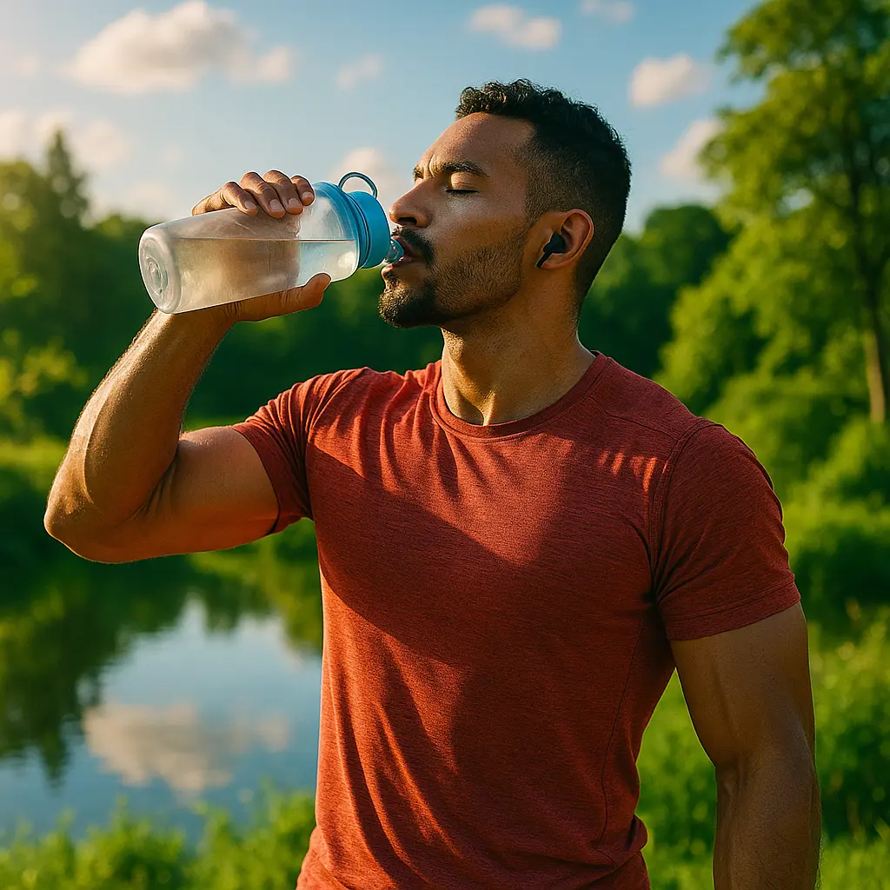

Benefits of Drinking Water for Weight Loss
1. Water Suppresses Appetite
Drinking water before meals can help reduce your appetite. A study published in Obesity (2008) found that people who drank 500ml of water before each meal lost 44% more weight over 12 weeks.
2. Water Boosts Metabolism
Cold water increases energy expenditure. Research shows that drinking 500ml of cold water can temporarily increase metabolism by 24-30% within 30-40 minutes.
3. Helps Burn Fat More Efficiently
Water is essential for lipolysis — the process of burning fat. Dehydration slows down your body's ability to metabolize fat and carbs.
4. Reduces Calorie Intake
Replacing sugary drinks with water cuts calories. One can of soda contains about 140 kcal — cut one per day, and that’s over 4,000 kcal per month.
5. When and How Much Water to Drink
- Drink 500ml 30 minutes before meals
- Total daily intake: 2.5–3.7L for men, 2–2.7L for women
- Spread intake across the day, avoid drinking large amounts at once
Recommended Products
These items can help you stay hydrated and track your progress: